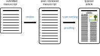
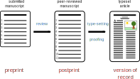

Module 2: Digitalisation in Research
New publishing practices: preprints and overlay journals
Jana Lasser
TU Graz & CSH Vienna
2021-11-25
Publishing workflow
Each of these article versions can also be published by the authors via self archiving.
Publishing workflow
Each of these article versions can also be published by the authors via self archiving.
Publishing workflow
Each of these article versions can also be published by the authors via self archiving.
Publishing workflow
Each of these article versions can also be published by the authors via self archiving.
Publishing workflow
Each of these article versions (e-prints) can also be published by the authors via self archiving.
Motivation for self-archiving
Accessibility: self-archiving of preprints, postprints or journal versions constitutes "green" Open Access.
Speed: self-archiving of preprints allows for faster sharing of results, without waiting for peer-review.
A short history of sharing preprints
1960: The first preprints are shared as hard copies to get feedback before submission.
1991: arXiv, the first online preprint server launches.
2010: arXiv gets increasingly popular among computer scientists to rapidly share research.
2013 - 2019: A number of other disciplinary preprint servers are launched (bioRxiv, PsyArXiv, medRxiv, ChemRxiv, SocArXiv).
2020: The need to rapidly dissemniate COVID research boosts popularity of preprint servers.
| Name | Discipline(s) | Size | Indexing |
|---|---|---|---|
| arXiv | physics, CS, ... | 1,890,000 | Google Scholar, Europe PMC, SciLit, PubMed, SHARE, ADS, SINSPIRE-HEP, PrePubmed |
| HAL | all | 840,000 | Google Scholar, OpenAIRE |
| Zenodo | all | 790,000 | OpenAIRE |
| bioRxiv | biology | 107,000 | Google Scholar, Microsoft Academic, Europe PMC, Crossref, PubMed, SHARE |
| OSF preprints | all | 2,290,000 | Google Scholar, Microsoft Academic, SHARE, Unpaywall |
| medRxiv | medicine | 15,000 | Google Scholar, Microsoft Academic, Europe PMC, Crossref, PubMed |
| chemRxiv | chemistry | 14,000 | Google Scholar, Europe PMC, Chemical Abstracts Services, Crossref, PubMed, ProQuest, Scopus |
| PsyArXiv | psychology | 13,000 | Google Scholar, SHARE, Microsoft Academic, Unpaywall |
Information from Wikipedia and ASAPbio, accessed on 2022-12-14.
Overlay journals
Idea: Provide quality assurance as overlay on top of a preprint server.
Workflow: Either an editor picks relevant articles and contacts the authors or authors submit to the overlay journal.
Examples: The Journal of Open Source Software, Quantum, Logical Methods in Computer Science.
Is this a thing?
| Journal | Discipline(s) | Publications | Impact Factor |
|---|---|---|---|
| The Journal of Open Source Software | Computer Science | 337 | 0.89 |
| Quantum | Quantum Physics | 162 | 6.77 |
| Logical Methods in Computer Science | Computer Science | 84 | 0.66 |
| Discrete Mathematics & Theoretical Computer Science | Computer Science | 41 | 0.47 |
| Discrete Analysis | Maths | 22 | 1.85 |
Information from Wikipedia, accessed on 2022-12-14.
When am I allowed to self-archive?
Obstacles for self-archiving:
The Ingelfinger rule: journals commit to only publishing findings that haven't been published elsewhere.
Before publishing an article, journals require a Copyright Transfer Agreement. Oftentimes these agreements include exclusive exploitation rights (reproduction, distribution, communication).
While authors hold the copyright of the content of the article (at least before signing it away), publishers might hold the copyright for the formatting of the article.
What to do if I want to self-archive?
(1) Check the self-archiving policy of the journal you intend to publish in at Sherpa Romeo.
(2) Try to negotiate non-exclusive exploitation rights with the publisher. See this page for an example of an alternative contract clause.
(3) Use your right to secondary exploitation (§37a öUrhG) and publish regardless of the signed Copyright Transfer Agreement.
When can I do secondary exploitation?
If you meet all these conditions, you are allowed to self-archive regardless of your Copryright Transfer Agreement. You have to name the source of the primary publication. Both Austria and Germany have such a law.
Exercise [10 min]
Go to Sherpa Romeo and check the self-archiving policy of the three top journals you either regularly publish in or regularly read articles from.
Try to identify at least three additional journals in your field with non-restrictive self-archiving policies. Make a list of these journals.